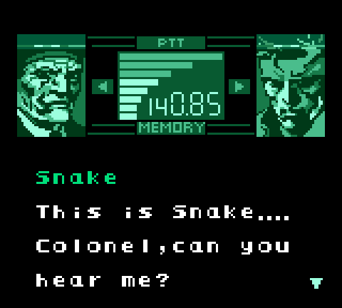

Vamos iniciar os estudos?
PlayAssista ao vídeo abaixo para uma introdução aos seus estudos
Quais as boas práticas de suporte aos jogadores e manutenção do jogo após seu lançamento?
O processo de finalização no desenvolvimento de jogos digitais é uma etapa fundamental que ocorre após a conclusão da maior parte do trabalho de desenvolvimento do jogo. Nessa fase, o foco está em refinar e polir todos os elementos do jogo, garantindo que ele esteja pronto para ser lançado no mercado e entregue aos jogadores.

A finalização envolve uma série de atividades, incluindo testes de qualidade, correção de bugs, ajustes de balanceamento e otimização de desempenho. A seguir analisamos cada uma dessas atividades com mais atenção:
Testes de qualidade: Nesta fase, os testadores jogam o jogo em busca de qualquer problema ou comportamento indesejado. Isso pode incluir falhas técnicas, erros de programação, problemas de jogabilidade, questões de interface do usuário, entre outros.
Os testadores documentam cuidadosamente todos os problemas encontrados para que a equipe de desenvolvimento possa corrigi-los. Também conhecido como QA (Quality Assurance), o testador de jogos também fornece feedback aos desenvolvedores sobre a jogabilidade, os gráficos e o áudio.
O usuário comum que testa o jogo antes de ser lançado ao público é denominado Beta Tester. São figuras importantes para o desenvolvimento de produtos e serviços de alta qualidade.
É importante ressaltar que existem vários tipos diferentes de Beta Testers. Alguns são remunerados, enquanto outros testam produtos ou serviços como voluntários. Alguns Beta Testers são selecionados por desenvolvedores, enquanto outros podem se inscrever para participar de programas de teste beta.
Correção de bugs: Com base nos relatórios de bugs dos testadores, a equipe de desenvolvimento corrige os problemas identificados.
Isso envolve depurar o código-fonte, ajustar o comportamento do jogo, consertar elementos gráficos ou sonoros que não estejam funcionando corretamente, entre outras correções necessárias para garantir que o jogo funcione corretamente.
Ajustes de balanceamento: Muitos jogos exigem um ajuste fino para garantir que a jogabilidade seja equilibrada e desafiadora. Isso inclui ajustar a dificuldade, equilibrar as habilidades dos personagens, calibrar os tempos de resposta, ajustar a distribuição de recursos, entre outros aspectos que podem afetar a experiência de jogo.
Esses ajustes são realizados com base nos feedbacks dos testadores e nas necessidades do público-alvo do jogo.
Otimização de desempenho: Para garantir que o jogo funcione de maneira suave e eficiente em diferentes dispositivos e configurações de hardware, é importante otimizar o desempenho. Isso envolve identificar gargalos de desempenho, reduzir o uso de recursos, melhorar os tempos de carregamento, otimizar a renderização gráfica, entre outros ajustes técnicos para garantir uma experiência de jogo fluida.
Além de atividades técnicas, a finalização também abrange outros aspectos, como a localização do jogo (tradução para diferentes idiomas), a criação de conteúdo adicional (DLCs - downloadable content) e a preparação para o lançamento e distribuição do jogo. Isso inclui a criação de materiais de marketing, a configuração de plataformas de distribuição (como lojas de aplicativos ou serviços online) e a preparação de campanhas de divulgação.
O processo de finalização é uma fase intensa que requer uma abordagem meticulosa para garantir que o jogo atenda às expectativas dos jogadores e seja entregue com alta qualidade.
É importante que todas as etapas sejam cuidadosamente executadas antes do lançamento para garantir uma experiência de jogo satisfatória e minimizar problemas pós-lançamento.
QUESTÃO 1
Qual das seguintes atividades NÃO faz parte do processo de finalização no desenvolvimento de jogos digitais?
O suporte aos jogadores desempenha um papel fundamental na indústria do entretenimento interativo, pois garante aos jogadores uma experiência positiva e satisfatória com o jogo e com a empresa desenvolvedora.
O suporte pode ser oferecido em diferentes formas ao longo do ciclo de vida do jogo, desde o pré-lançamento até o pós-lançamento. Vamos explorar as principais considerações para fornecer suporte ao jogador:
Comunicação pré-lançamento: Antes do lançamento do jogo, é importante estabelecer canais de comunicação eficazes com os jogadores em potencial. Isso pode ser feito através de blogs, fóruns, redes sociais, newsletters ou até mesmo plataformas de crowdfunding (financiamento coletivo), onde os desenvolvedores podem interagir com os jogadores, responder a perguntas, fornecer atualizações de progresso e receber feedback antecipado.
As principais plataformas de financiamento coletivo são o Kickstarter e o Catarse, que possuem um longo histórico de projetos financiados, vide jogos como A Lenda do Herói: o Jogo (R$ 258.487), Shenmue 3 (US$ 6.333,295), e Shovel Knight (US$ 311,502).
Suporte técnico: Durante o jogo, é crucial fornecer suporte técnico eficiente para os jogadores. Isso inclui ajudar os jogadores a solucionar problemas técnicos, como falhas, problemas de desempenho, erros de instalação, entre outros.
Uma equipe de suporte deve estar disponível para responder a consultas, fornecer orientações passo a passo e solucionar problemas técnicos de forma rápida e eficiente.
Atualizações e correções de bugs: Os jogos digitais frequentemente recebem atualizações e correções de bugs para melhorar a experiência do jogador.
A equipe de desenvolvimento deve monitorar o feedback dos jogadores, identificar problemas recorrentes e implementar soluções por meio de atualizações regulares. Isso demonstra um compromisso contínuo em melhorar o jogo e atender às expectativas dos jogadores.
Fóruns e comunidades: Fornecer um espaço para a comunidade de jogadores se reunir, trocar ideias, discutir estratégias e compartilhar experiências é uma parte importante do suporte aos jogadores.
Os fóruns de discussão, grupos nas redes sociais e outras plataformas comunitárias podem ser estabelecidos para promover a interação entre os jogadores e a equipe de desenvolvimento. Isso cria um senso de pertencimento, engajamento e fidelidade dos jogadores ao jogo.
Atendimento ao cliente: O atendimento ao cliente é uma parte essencial do suporte aos jogadores. Os jogadores devem ter um canal direto para entrar em contato com a equipe de suporte, seja por meio de e-mail, chat ao vivo ou sistemas de tickets.
É importante responder prontamente às consultas dos jogadores, resolver problemas ou encaminhá-los para o funcionário ou equipe adequada para obter assistência adicional.
Expansões e conteúdo adicional: Para manter o interesse dos jogadores ao longo do tempo, muitos jogos digitais lançam expansões e conteúdo adicional, como DLCs (downloadable content).
Esses conteúdos extras podem adicionar novas missões, personagens, mapas, modos de jogo, entre outros, oferecendo uma experiência prolongada aos jogadores.
O suporte ao jogador também inclui garantir que essas expansões sejam entregues sem problemas e que os jogadores tenham acesso adequado a elas.
Vale salientar que a maior parte desses conteúdos são pagos, pois integram o modelo atual de negócios da indústria, consolidado desde que os consoles de videogame passaram a ter acesso à internet e os seus próprios sistemas de distribuição digital (vide a Microsoft Store e a PlayStation Network).
VOCÊ SABIA?
Nos dias 16 e 17 de abril de 2011 a PSN (PlayStation Network) sofreu um grande ataque hacker que obrigou a Sony a desligar os servidores da rede dos consoles da linha PlayStation. Mais de 100 milhões de usuários do mundo inteiro tiveram seus dados pessoais expostos, forçando a Sony a investir ainda mais em segurança por meio da reconstrução de sua rede, ativando-a algumas semanas após o ataque. Para compensar a queda do serviço, a Sony lançou o pacote “Bem-vindos de volta”, que presenteou os usuários com dois jogos gratuitos a serem escolhidos a partir de uma lista, ambos de posse vitalícia.
G1. Entenda o ataque à rede online do PlayStation 3, a PSN. 2011. Disponível em: https://shorturl.at/FKV34
G1. A Sony oferece jogos gratuitos aos usuários da rede on-line do PS3. 2011. Disponível em: https://shorturl.at/hVX19
QUESTÃO 2
Qual das seguintes atividades NÃO faz parte do Suporte aos jogadores?
A manutenção de um jogo digital após o seu lançamento é uma parte essencial do processo de desenvolvimento e gestão de jogos. Ela envolve uma série de atividades contínuas realizadas pela equipe responsável pelo jogo, com o objetivo de melhorar, corrigir problemas e fornecer suporte aos jogadores.

Uma das principais razões para a manutenção contínua de um jogo é a necessidade de corrigir bugs e problemas técnicos que possam surgir após o lançamento.
Mesmo com testes rigorosos antes do lançamento, é difícil prever todas as situações e comportamentos que podem ocorrer quando o jogo é jogado por uma grande variedade de jogadores em diferentes dispositivos e configurações.
Portanto, a equipe de desenvolvimento deve estar preparada para identificar e corrigir esses problemas assim que eles forem relatados pelos jogadores.
Além disso, a manutenção do jogo também pode incluir atualizações de conteúdo, que trazem novos recursos, personagens, níveis ou modos de jogo.
Essas atualizações ajudam a manter o interesse dos jogadores e a mantê-los engajados com o jogo por um período mais longo.
A adição de conteúdo novo e relevante pode atrair jogadores antigos de volta ao jogo e também pode atrair novos jogadores que possam ter ficado interessados no jogo por causa das atualizações.
Outro aspecto importante da manutenção de jogos é o suporte ao jogador. Isso envolve responder a perguntas, solucionar problemas e fornecer orientações aos jogadores que podem ter dúvidas sobre como jogar o jogo, como resolver certos desafios ou como usar determinados recursos.
O suporte ao jogador pode ser fornecido por meio de fóruns, redes sociais, chats online ou sistemas de suporte dedicados.
Além disso, a manutenção de um jogo digital também pode envolver ajustes de equilíbrio de jogo. À medida que os jogadores exploram e interagem com o jogo, a equipe de desenvolvimento pode identificar áreas onde certos elementos do jogo estão desequilibrados.
Isso pode incluir habilidades de personagens muito fortes ou fracas, armas desbalanceadas ou mecânicas de jogo que podem ser abusadas. Realizar ajustes de equilíbrio periodicamente ajuda a garantir uma experiência de jogo justa e agradável para todos os jogadores.
VOCÊ SABIA?
Criadora de franquias de sucesso como MegaMan, Street Fighter e Resident Evil, a empresa nipônica Capcom possui um longo histórico de polêmicas envolvendo conteúdos extras de seus jogos. Títulos como Resident Evil 5 e Street Fighter X Tekken causaram revolta na comunidade gamer mundial por cobrar por conteúdo que já está presente no disco vendido, fazendo o jogador pagar apenas por uma chave que destrava o conteúdo extra ofertado.
As desenvolvedoras de jogos são frequentemente criticadas por adotar práticas controversas, como lançar jogos incompletos e posteriormente vender complementos para oferecer uma experiência completa, o que tem sido considerado uma estratégia mercadológica questionável. É importante mencionar os casos em que as DLCs transformam os jogos em pay-to-win, onde as desenvolvedoras vendem pacotes de expansão que conferem uma ampla vantagem aos compradores, resultando em um desequilíbrio no jogo para aqueles que não adquiriram as DLCs. Isso tem sido uma ocorrência frequente, como observado na Eletronic Arts em jogos como Fifa e Star Wars Battlefront 2. Outro exemplo recente são os jogos da série Destiny, que torna impossível jogá-los sem as DLCs, pois a Activision bloqueou o acesso ao modo PVP e aos assaltos semanais, que proporcionam os melhores itens para aqueles que não possuem as expansões.
The Enemy. Conteúdo de Resident Evil 5 coloca em questão a cobrança por extras que os jogadores já têm. 2009. Disponível em: https://shorturl.at/fpyGI
TechTudo. Capcom diz não ver diferença entre DLC e conteúdo travado no disco de Street Fighter X Tekken. 2012. Disponível em: https://shorturl.at/kJKLW
Uma etapa muito importante na produção de um jogo é a sua publicação, pois isso significa finalmente disponibilizá-lo no mercado para os jogadores.
Na indústria do entretenimento interativo, há empresas especializadas na publicação de jogos, denominadas Game Publisher.
Como o processo de publicação de um jogo envolve bastante investimento, essas empresas selecionam quais jogos estão aptos a serem lançados, mediante uma análise profunda de mercado e de riscos.

A publicação envolve uma série de etapas e estratégias para garantir que o jogo seja lançado com sucesso e alcance seu público-alvo. Seguem abaixo as principais considerações da publicação de jogos digitais:
Planejamento de lançamento: Antes de publicar um jogo, é crucial realizar um planejamento detalhado do lançamento. Isso envolve definir metas, identificar o público-alvo, criar estratégias de marketing e estabelecer um cronograma. O planejamento cuidadoso ajudará a garantir que todas as etapas necessárias sejam executadas de forma eficiente e que o lançamento ocorra no momento ideal.
Distribuição de plataformas: Uma decisão importante na publicação de jogos digitais é determinar em quais plataformas o jogo será lançado. Isso pode incluir consoles de videogame, computadores, ou dispositivos móveis. Cada plataforma tem suas próprias considerações técnicas e requisitos, de modo que é necessário adaptar o jogo de acordo com essas especificações.
Certificação e aprovação: Dependendo da plataforma, pode ser necessário passar por um processo de certificação e aprovação antes do lançamento. Por exemplo, as principais plataformas de consoles possuem requisitos estritos de qualidade e conformidade que um jogo deve atender antes de ser disponibilizado para os usuários. É importante preparar e enviar o jogo para essa fase de certificação com antecedência suficiente para garantir que todos os requisitos sejam cumpridos.
Estratégias de marketing: A publicação de um jogo digital requer uma estratégia de marketing eficaz para alcançar os jogadores. Isso pode incluir a criação de um site oficial, o uso de mídias sociais, a produção de materiais promocionais, como trailers e imagens, a colaboração com influenciadores e a participação em eventos de jogos. O objetivo é criar conscientização sobre o jogo, gerar interesse e aumentar a base de jogadores antes e durante o lançamento.
Atualizações pós-lançamento: A publicação de jogos digitais não termina no lançamento inicial. Após o lançamento, é essencial fornecer suporte contínuo ao jogo, corrigindo bugs, lançando atualizações de conteúdo e interagindo com a comunidade de jogadores.
Essas atualizações pós-lançamento ajudam a manter o interesse dos jogadores, melhorar a qualidade do jogo e construir uma base de jogadores engajada.
Monetização: A publicação de jogos digitais também envolve decidir sobre o modelo de monetização do jogo. Isso pode incluir a venda direta do jogo, microtransações, assinaturas, anúncios ou uma combinação de diferentes modelos.
É importante encontrar um equilíbrio entre o valor oferecido aos jogadores e a sustentabilidade financeira do jogo. Atualmente existem três modelos de negócios na indústria: Pay-to-play, Free-to-play e os jogos NFT. O Pay-to-play é o modelo tradicional, no qual os jogadores pagam uma única taxa para adquirir a versão física ou digital do jogo.
No modelo Free-to-play os jogadores podem baixar e jogar o jogo gratuitamente, mas podem comprar itens dentro do jogo para melhorar sua experiência.
Por fim, os jogos NFT usam tokens não fungíveis (NFTs) para representar ativos exclusivos e indivisíveis dentro do jogo, muitas vezes usando a tecnologia blockchain para garantir a autenticidade e a propriedade.
Esses ativos podem incluir itens, personagens, terrenos ou qualquer outra coisa que tenha valor dentro do jogo. Os jogadores podem comprar, vender e trocar NFTs uns com os outros, assim como também podem usá-los em outros jogos que suportem NFTs.
Segue abaixo exemplos de jogos de cada modelo de negócios:


Agora para aprimorar os seus conhecimentos, vamos responder às questões a seguir?
QUESTÃO 3
Qual é uma das principais considerações da publicação de jogos digitais?
QUESTÃO 4
Qual é uma característica distintiva do modelo de negócios Free-to-Play (F2P) em jogos digitais?
Avance e eleve suas habilidades no mundo dos jogos digitais
Continue estudando e desbloqueie novos níveis.